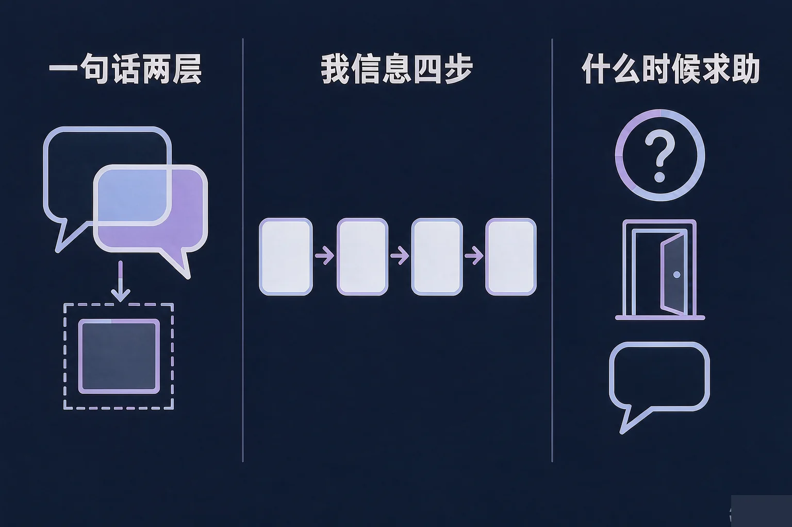
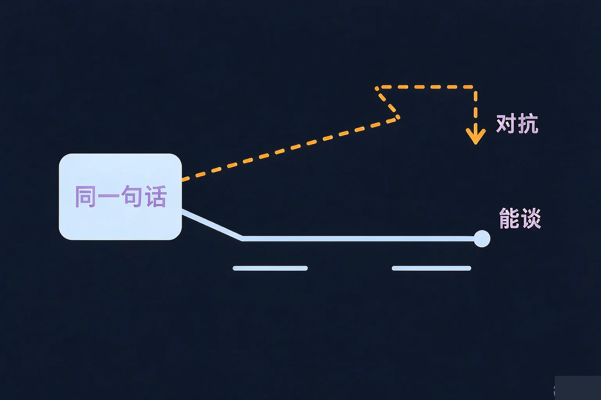
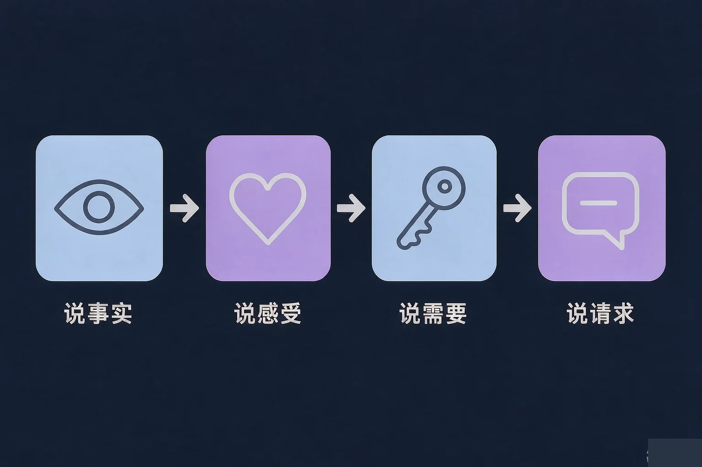

Gallery
v1.0.0 · skill v7.22.0
高中高一 · 人际交往
同一句话，为什么换一种说法，结果就完全不同？

选一个最贴近你经历的困惑，后面的内容都会围着它展开。
选择或输入后，这节课会围绕你的问题展开。
先凭直觉选一个，选完立刻看到解释——错了也没关系，正好知道要重点听哪里。
1. 室友半夜还开着大灯，你会怎么说？
第二种只说了自己的处境和一个具体请求，对方比较容易直接回应。错因提醒：常见错误是误认为只要道理在自己这边，语气就不重要——对方往往先听到的是评价。
2. 同学借了你的笔记一直没还，你更愿意：
说清具体的事和具体的时间，对方不需要先保护自己，事情才好办。错因提醒：用「每次都」开头，容易把一件小事升级成对人的评价。
3. 如果一件事你已经自己试过几次，还是没变化，比较合适的是：
自己先试是本事，试过之后找人商量，也是本事。错因提醒：容易把求助误认为示弱或者打小报告，其实它只是换一个更有力的办法。
同一件事，说法不同，结果常常完全不同。原因就藏在一句话的两层里。
为什么要先学这个？你已经知道，说话是为了把事情讲清楚；但同一句话换个说法，结果常常完全相反；所以我们得先看清一句话里到底装着什么，再学怎么把它说出来。
内容那一层
说的是事情本身：灯还亮着、笔记没还、你打断了我的话。在沟通里，这一层称为内容层。
关系那一层
说的是我怎么看你：自私、不可靠、说了也没用。这一层会先被听到，也最容易让人竖起身上的刺。
误认为「我讲的道理是对的，对方就该听」。道理对不等于对方接得住——他先要应付关系那一层，才轮得到内容。

🔍 深层理解 换个角度再看一遍这件事，看看能不能说出背后的原理。
看见它：「你怎么又忘了」和「这件事还没做完」讲的是同一件事，可被听到的东西完全不同。
解释它：人被评价时，第一反应通常是解释或还击，这时候他顾不上处理事情本身——这不是他脾气差，是很自然的反应。
迁移它：这条规律在家里、在小组作业里、在网上的对话里都一样成立：先去掉评价，事情才有得谈。
先选一个情境，再轮流点开两种说法，看看对方的感受和后面会怎么走。
这样说
那样说
我信息不是要你软下来，而是把话说得对方接得住，事情才推得动。
关于边界，也说三句：同学之间出现好感是正常的事；友谊和恋爱是两种不同的关系，都需要尊重对方的意愿和节奏；别人的好意不等于必须回应，你的拒绝也不需要道歉到失去自己。

三段各选一句，看看拼出来的道歉会带来什么反应，再换一种拼法比一比。
情境：小周和室友因为作息别扭了两周，两个人都没睡好，这几天见面基本不说话。
不少同学会等对方先开口，误认为先说话就是先认输。其实先开口的人只是先动手把事情往前推；真正的关键在这句话里有没有评价对方。整套示范里没有一句是评判，所以对方接得住。
先凭直觉选一个，选完立刻看到解释——错了也没关系，正好知道要重点听哪里。
1. 下面哪一句最接近我信息的说法？
第二种只讲事实、影响和请求，没有给对方下判断。错因提醒：用「每次都」开头，很容易把一件小事升级成对人的评价——这是沟通里最常见的搞混：把事和人混在一起说。
2. 一句道歉里，下面哪三样东西不能少？
道歉的重点是让对方知道你看清了哪件事、它带来了什么、以后会有什么不同。错因提醒：误认为道歉就是态度软，于是拼命加好话，反而绕开了最该说清的那一件事。
3. 关于求助，下面哪种想法更合适？
求助只是换一个更有力的办法推进事情，尤其是持续被排除、反复被为难这类自己扛不动的情况。错因提醒：把求助和打小报告搞混，是最容易让人独自硬撑的常见错误。
八张小卡片，各选一个判断。选完会给出解释，全部点完后下面会有一段小结。
写下来，留给自己：
如果现在有一件事让你为难，你第一个愿意开口的人是谁？你打算怎么跟他说第一句？
先凭直觉选一个，选完立刻看到解释——错了也没关系，正好知道要重点听哪里。
1. 小组作业里，有同学总是不做自己那部分，你打算怎么开口？
说清时间、影响和一个具体的请求，比质问更容易得到回应。自己全干完虽然省了口舌，但下次还是会碰上同样的情况。
2. 有同学对你有好感，但你只想做朋友。比较合适的是：
友谊和恋爱是两种不同的关系，都需要尊重对方的意愿和节奏。说清楚、不伤人，也是对自己负责。错因提醒：误认为拖着不回应比较不伤人，其实猜测往往比一句清楚的话更让人难受。
3. 你已经在班群里被人反复说不友善的话，让他们停也没停。接下来更合适的是：
持续被为难而自己止不住时，让大人介入是最快的办法，保留记录能帮你说清事情经过。错因提醒：常见错误是觉得说了也没用，于是独自忍着——事情往往因此拖得更久。
还有一件同样重要的事：自己先试是本事，知道什么时候找可信的大人商量，也是本事。请在这节课后记住至少一个你能找到的求助对象。
给别人讲一遍：请用「事实、感受、请求」这三个词，把一次真实的别扭说成对方接得住的话。
三层练习，做完第一、二层就算通关；第三层留给愿意继续探索的同学。
⭐ 基础巩固（必做）
⭐⭐ 能力应用（必做）
⭐⭐⭐ 迁移挑战（选做）
左边是学它之前要先会的，右边是学会之后可以继续探索的，下面是同一领域的伙伴知识。
图谱正在加载：首次进入需下载知识索引（约 1–3 秒），加载完成后本行会自动消失。